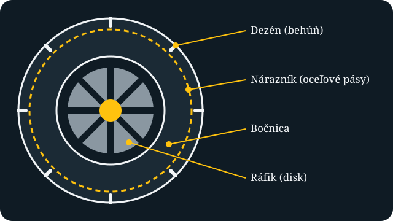
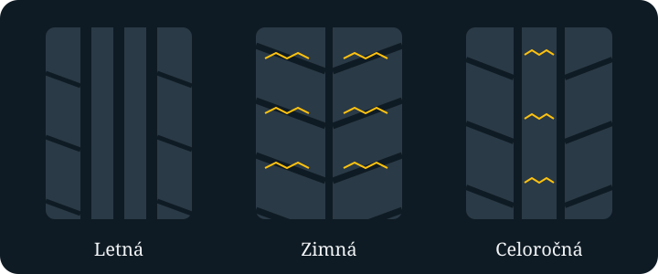
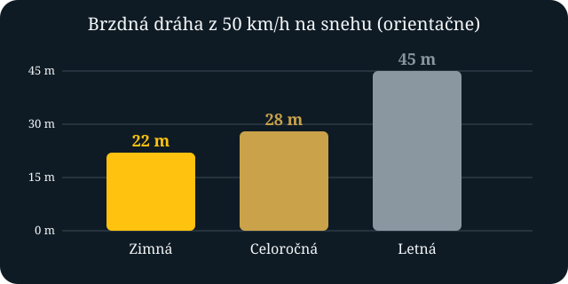

Zimné pneumatiky: kedy ich prezuť a ako ich vybrať
Pneumatiky sú jediným kontaktom auta s vozovkou. Ich štyri plochy veľkosti dlane rozhodujú o tom, ako auto zrýchli, zabrzdí a prejde zákrutu. Práve preto na nich nemožno šetriť, najmä v zime, keď sa podmienky na ceste menia z hodiny na hodinu.
Kedy prezúvať?
Zimné pneumatiky sa oplatí nasadiť, keď teplota dlhodobo klesne pod približne 7 °C. Pri nižších teplotách zmes letných pneumatík tvrdne a prilnavosť sa výrazne zhoršuje, aj keď na ceste nie je sneh ani ľad. Zimná zmes zostáva mäkká aj pri mraze, a preto lepšie drží na studenom asfalte.
Na Slovensku platí povinnosť jazdiť na zimných pneumatikách, ak je vozovka súvislo pokrytá snehom, ľadom alebo námrazou. Praktické pravidlo je jednoduché: prezúvaj na jeseň s prvými ranými mrazmi a na jar až keď sa teploty stabilne držia nad 7 °C.
Z čoho sa pneumatika skladá

Dezén je časť, ktorá sa dotýka vozovky a odvádza vodu a sneh. Pod ním sú oceľové pásy, ktoré držia tvar pneumatiky, a po stranách bočnice, ktoré prenášajú sily pri zatáčaní.
Letná, zimná alebo celoročná?

| Vlastnosť | Zimná | Celoročná | Letná |
|---|---|---|---|
| Optimálna teplota | pod 7 °C | -5 až 25 °C | nad 7 °C |
| Sneh a ľad | výborná | priemerná | nevhodná |
| Suchá vozovka v lete | horšia, rýchlejšie sa opotrebuje | výborná | |
| Cena a nákup | dve sady = vyššie náklady, výmena dvakrát ročne | jedna sada, nižšie náklady | lacnejšie, hodí sa pri ročnom prezúvaní |
| Pohodlie | kompromis | ||
| Údaje sú orientačné a líšia sa podľa výrobcu a modelu. | |||
Celoročné pneumatiky sú rozumná voľba pre vodičov, ktorí jazdia hlavne po meste a v nížinách. Ak jazdíš v horách alebo často vyrážaš za sneh, zimné pneumatiky sú bezpečnejšie.
Prečo na zimných pneumatikách záleží

Rozdiel v brzdnej dráhe môže byť desiatky metrov. Pri rýchlosti 50 km/h to znamená, že auto na letných pneumatikách ešte ide rýchlosťou, pri ktorej auto na zimných už stojí.
Na čo sa pozrieť pri kúpe
- Označenie: hľadaj symbol snehovej vločky v hore (3PMSF), ktorý potvrdzuje skutočnú zimnú pneumatiku.
- Dezén: zákonné minimum je 3 mm, odporúča sa však 4 mm a viac.
- Rok výroby: kód DOT udáva týždeň a rok, pneumatiky staršie ako 6 rokov radšej nekupuj.
- Rozmer: musí zodpovedať údajom v technickom preukaze.
- Test: pozri si nezávislé testy pneumatík, kde sa porovnáva brzdenie, hluk aj spotreba.
Ako čítať označenie na boku
Na bočnici pneumatiky nájdeš kód, napríklad 205/55 R16 91 H. Znamená:
- 205 - šírka pneumatiky v milimetroch.
- 55 - výška bočnice v percentách šírky.
- R16 - radiálna konštrukcia a priemer ráfika v palcoch.
- 91 - index nosnosti (615 kg na pneumatiku).
- H - rýchlostný index (do 210 km/h).
Starostlivosť a skladovanie
Pneumatiky skladuj na suchom a chladnom mieste mimo priameho slnka a chemikálií. Pred uložením ich umy a označ si polohu na aute (PP, ZP, PZ, ZZ). Zložené kolesá na diskoch ukladaj naležato na seba alebo ich zavesiť, samotné pneumatiky postav na behúň.
Dvakrát ročne nechaj kolesá vyvážiť a pravidelne kontroluj tlak, ktorý sa pri poklese teploty o 10 °C zníži približne o 0,1 bar. Po prvých 500 km po prezutí dotiahni kolesové skrutky.
Najčastejšie chyby
- Mixovanie rôznych typov a značiek na jednej náprave.
- Jazda na prestarých pneumatikách s tvrdnúcou zmesou.
- Zanedbaný tlak a nevyvážené kolesá.
- Odkladanie prezutia, až kým nenapadne sneh.